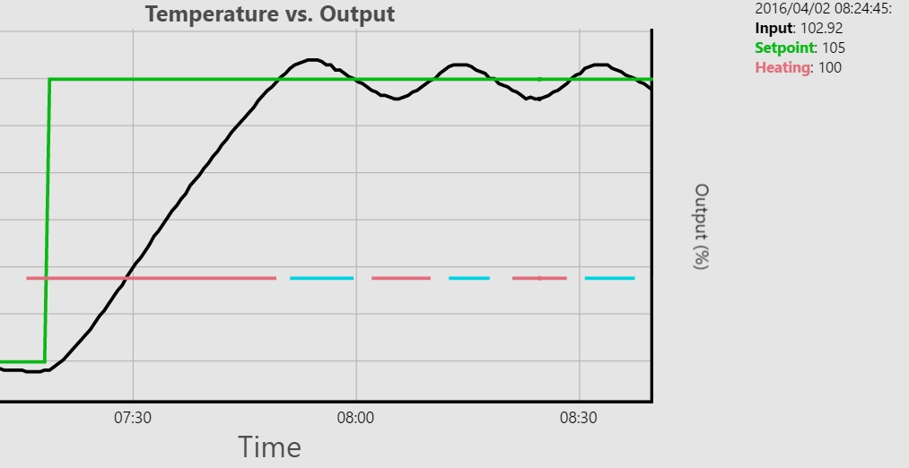
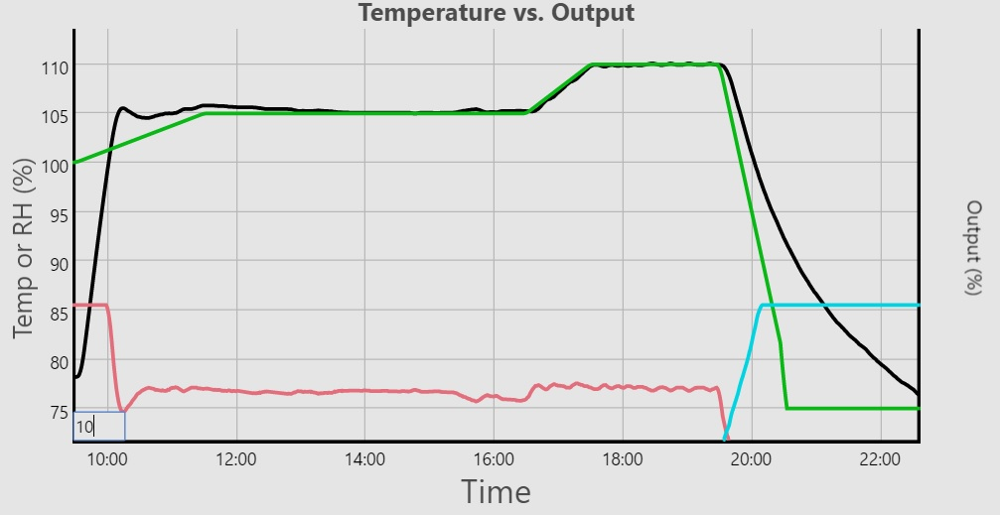
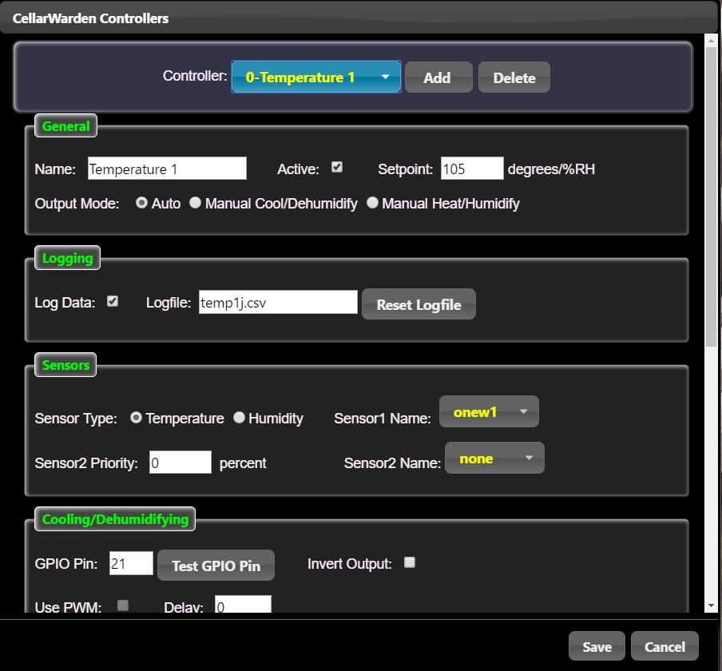
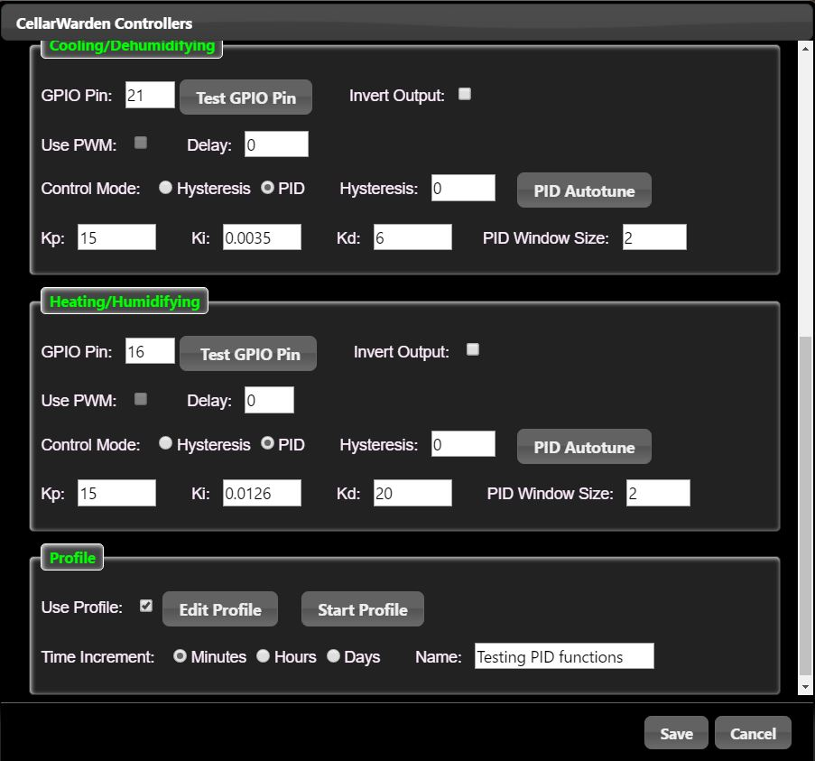
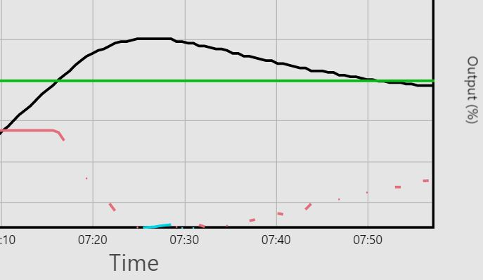
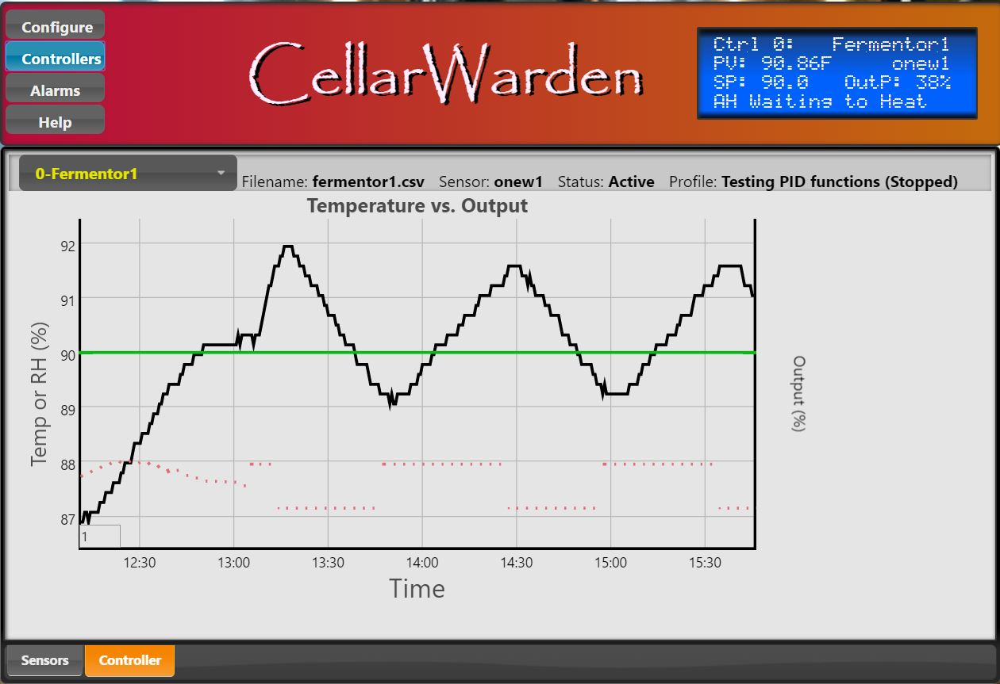

CellarWarden supports control of wine cellars, fermentors and other appliances through the provision of an unlimited number of controllers. Each controller takes input from one or two thermal (e.g. DS18B20) or humidity (e.g. DHT22) sensors and controls actuators connected via GPIO outputs. Controller output may be one- or two-sided (e.g. heat only, or heating and cooling with automatic switchover), and will attempt to maintain a stable output to control temperature or humidity to a defined setpoint. Controllers can also employ a setpoint profile in which the setpoint varies over time, and these profiles can be created on the fly or loaded from template files stored on the server.
Controllers may be configured to use one primary sensor, and an optional secondary sensor, to monitor the output of an actuator/appliance (e.g. refrigerator, heater, humidifier, etc). Sensors currently supported are DS18B20 1-Wire temperature sensors and DHT11/DHT22-type temperature/humidity sensors. CellarWarden provides upto 2 DHT-type and 8 DS18B20 sensors. If two sensors are used, the relative impact of the secondary sensor on the input value will be factored using a percentage applied to the secondary value. For example, if sensor 1 reads 100F and sensor 2 reads 80F, a 50% "Sensor 2 priority" value will give an input of 90F; this is a simple example of averaging between the two sensors. However, it may be desirable to lower or increase the priority of sensor 2 accordingly.
Each controller supports upto two actuators/appliances. These actuators are connected via GPIO pins, and the controller will vary the output of these actuators based on comparing the current input(s) to the desired setpoint in Automatic mode. There are two options for Automatic output mode: Hysteresis and PID. A third output mode is Manual mode, in which the setpoint is set from 0 to 100% to manually control the output irrespective of the input value.
Hysteresis mode attempts to maintain the current input value close to the setpoint and will activate the actuator if it is above (or below) the setpoint. For example, if the setpoint is 65F and the input value is 63F, the heating actuator (if configured) will be activated until the input nears the setpoint. Note that in Hysteresis mode, cooling/dehumidifying and heating/humidifying Hysteresis values may be set to turn off actuator output as it nears the setpoint. This will help to minimize over- or under-shooting the setpoint, and will also limit rapid cycling of the actuator(s).
Above, we can see the output from a controller set to maintain temperature at 105F using Hysteresis mode, with hysteresis values of one degree F on either side of the setpoint.
PID mode attempts to maintain the current input value near the setpoint by using PID control.
It calculates the error between the input (process variable) and the
setpoint and automatically varies the output proportionally to maintain
the input near the setpoint. PID control is preferred when the actuator
will support this form of output. Currently, CellarWarden supports
software time-proportioning output for PID control, but future versions will also support hardware pulse-width-modulation (PWM)
for compatible actuators (e.g. DC fans, valves, etc). For
time-proportioning, the output value is converted to a proportional
amount of time the actuator is on for a set period of time called the
"window." The amount of time for this window is set using the parameter
"PID Window Size." For example, for a window of 60 seconds, a 10%
output would cause the actuator to be on for 6 seconds and then off for
the remaining 54 seconds, and then the process would be repeated. Short
window sizes (>= 2 seconds) are preferred for fast acting actuators
(e.g. heaters), whereas long window sizes (e.g. 300 seconds) are to be
used for slow acting actuators that might be damaged by rapid on/off
cycling (e.g. refrigerators).
Above is an example of a controller using PID output mode. Here, the temperature remains fairly stable, with the exception of some disturbances toward the end of this sequence (cold water added at around 18:05). The red line shows that the heating actuator was active at 100% initially after the setpoint (green line) was shifted. After reaching the setpoint, the heating actuator output stabilized at roughly 80% to maintain the temperature.
Profile Mode: The setpoint for a controller can follow a time vs. setpoint profile in either PID or Hysteresis output mode. This can be useful for control of beer or wine fermentation, or to slowly ramp between different temperature or humidity levels.

In the example above, the controller is using PID output mode, with the setpoint (green line) following a temperature profile. After ramping up to the setpoint, the heating actuator stabilized at roughly 40% output, and ramped up again before the profile called for cooling. Very complex temperature or humidity profiles can be achieved through the use of this function.
To configure controllers, click on the Controllers button on the CellarWarden banner. This will bring up the Controllers dialog:
Controller dialog Banner
On the banner, there are three controls, a pulldown menu to select a controller to edit, an Add button to add new controllers and a Delete button to delete the currently selected controller. Additions and deletions will not be made until the Save button is pressed.
General
Here, general features of the selected controller may be edited. Name is used to provide a descriptive name for the controller. The Active checkbox is used to control the processing status of the controller. Use this checkbox to turn the controller on and off. The Setpoint box is used to set the desired temperature or humidity for this controller (when a profile is not running on this controller). In Manual output mode, this input is used to set the ouput (0-100%). Output Mode is used to select between automatic and manual output modes. Use Auto for Hysteresis or PID controlled output. Use Manual Cool or Manual Heat to apply a percent output (0-100%) to either actuator. Note that the selected actuator must be in PID mode for manual output to function. In Hysteresis mode, Manual output does not function.
Logging
A controller's input and output values may be optionally saved to a log file for viewing on the Main page under the "Controller" tab. For this, the Log Data checkbox must be checked, and a unique Logfile name provided. The logfile should be named with the extension .csv, e.g. temp1.csv. These logfiles are comma delimited text files and may be downloaded from the server in the ../CellarW/public/controllers directory and viewed using Excel or other spreadsheet software. Click the Reset Logfile button to delete all data in the logfile if you wish to start logging over.
Sensors
Here, the sensor(s) used by the controller are set up. Select the type of sensor, humidity or temperature, using the Sensor Type control. Use the Sensor1 Name pulldown menu to select the primary sensor. If a secondary sensor is desired, enter the Sensor 2 Priority (from 0 to 100%) and select the Sensor2 Name from the pulldown list.
Use the scroll bar on the right to see the rest of the Controllers configuration dialog...

Cooling/Dehumidifying
This fieldset describes the cooling or dehumidifying actuator that will be controlled. Enter the GPIO number that connects to the actuator. Note that the Broadcom (BCM) GPIO number is used, not the actual pin on the GPIO header of the Raspberry Pi. More information about GPIO pin numbering can be found by clicking on this link. Click on the Test GPIO Pin button to test the functionality of this GPIO pin; a two second pulse will be sent to activate this pin. The Invert Output checkbox may be selected to invert the output of this GPIO, a feature useful for connecting to relay boards that require the GPIO to be pulled low to be turned on. The Use PWM checkbox is currently inactive, but will provide hardware PWM output in a future update of CellarWarden.
The Delay parameter can be set to a non-zero value (in minutes) to cause a delay in switching on the actuator after it has turned off. For example, if the delay is set to 5, after switching off, the cooling actuator will be delayed for 5 minutes before it can switch on again. The purpose of this delay is to prevent rapid cycling of the actuator which could damage certain appliances, e.g. those with compressors like refrigerators, wine cellar cooling units, etc. This delay is implemented in both Hysteresis and PID output modes. Use a long delay time (e.g. 5 minutes) for compressor-based appliances, and a short or no delay for fast-acting appliances (e.g. heaters, ultrasonic misters). When the actuator has a delay, the output on the Controller tab graph will be discontinuous, reflecting times when the actuator is on vs. when it is in a delay. An example of this is shown for a heating actuator in PID mode with a set delay of 2 minutes...

Note the broken red lines shortly after the input (black line) surpasses the setpoint (green line). Since PID mode uses time-proportioning (e.g. the actuator turns on for a percentage of the time window and then turns off), each time it turns off, the actuator will enter the delay mode and the LCD display will indicate "Waiting for Heat," etc. Since the actuator is off during these delay periods, the red line showing heating output is broken. Note that the roll window is set to 1. If the roll window is higher than one, averaging may connect the segments in which the heating actuator was on, again an artifact of applying a rolling average to such data.
The Control Mode may be set for Hysteresis or PID mode by clicking on the correct radio button. Hysteresis sets a value for cooling/dehumidifying in which the actuator will turn off before the input hits the setpoint. For cooling, the Hysteresis value will be added to the setpoint. For example, with Hysteresis set to 2, if the setpoint is 65F, the actuator will turn off when the input reaches 67F. The Hysteresis value does not currently impact PID control and only affects Hysteresis mode.
Use the PID Autotune button to activate autotuning on this actuator. Note that autotuning is supported for both the Cooling/Dehumidifying and Heating/Humidifying actuators independently. Only one actuator may be autotuned at a time. To independently autotune the cooling/dehumidifying actuator, turn off the heating/humidifying actuator by unplugging it or by entering a blank value in the heating actuator's GPIO Pin field. It is suggested that you autotune your system at a stable temperature where the output is greater than 20% and less than 80% to obtain the most reliable tuning parameters. You may also manually set the PID values for Kp, Ki, and Kd by entering these values in each field. Note that autotuning may yield very large values for the Kd parameter, reflecting the relatively slow processes controlled by this actuator. More reasonable values less than 20 give more stable outputs. Autotuning may take some time (an hour or more) for slow processes, and the autotune mode will be indicated by an "AC" or "AH" prefix on the status line of the LCD panel. Autotuning will also be apparent on this actuator as the PID Autotune button will toggle to Cancel Autotuning. Click this button to cancel autotuning. If the autotune routine has been long enough (at least one cycle), preliminary tuning parameters will be reported in the server log. If the autotune routine is allowed to complete, the Kp, Ki and Kd fields will be filled with the calculated values.

Autotuning is engaged on the heating actuator above. Note the discontinuous lines (red dots), indicating that the heating actuator has a delay set to minimize rapid cycling on this actuator. For this example, the temperature (input) was allowed to rise and settle near the setpoint and then the autotune routine was started. This results in a shift in the actuator output roughly 20% higher than when started, resulting in a peak in the temperature. Then the output shifts to 20% below the starting output level, resulting in a lower peak. This process is repeated until the autotune routine has determined the average cycle time, allowing for calculation of the PID tuning parameters. CellarWarden employs the Ziegler-Nichols PID autotuning algorithm, which yields fairly aggressive tuning parameters. It is useful for reaching the setpoint quickly and for minimizing cycling, but it tends to result in an overshoot on the first cycle. To minimize this overshoot, you may wish to reduce the Kp value somewhat. More information about PID autotuning is available here.
The PID Window Size field is used to set the window length in seconds for time-proportioning control as explained above.
Heating/Humidifying
The parameters in this fieldset are similar to those in the Cooling/Dehumidifying fieldset, but control the heating or humidifying actuator. Note that if the controller requires only a single actuator (either Cooling/Dehumidifying or Heating/Humidifying), leave the GPIO pin blank for the actuator that will not be connected to an appliance. Even if an actuator is not connected, it is important that PID Kp, Ki and Kd values are set for this actuator when in PID mode; just copy these values from the active actuator's fieldset. For heating/humidifying, the Hysteresis value will be subtracted from the setpoint so that the actuator turns off before hitting the setpoint. For example, if the setpoint is 65F and the Hysteresis value is 1, the actuator will turn off when the input hits 64F.
Profile
Each controller may use a single profile that will vary the setpoint over time. Click on the Use Profile checkbox to enable profile processing on this controller. Click on the Edit Profile button to open up the Profile Dialog to edit the profile parameters. Click the Start Profile button to start processing on the selected profile. Note that this will toggle to Stop Profile when a profile is currently active. Time Increment controls the timebase in which the selected profile is handled. Select on Minutes, Hours or Days to indicate the appropriate timebase for this profile. Supply an appropriately descriptive name for this profile in the Name field. Note that when controllers are edited in the Profile Dialog, the name associated with the profile edited or loaded in that dialog will be copied here.
Save/Cancel
Click on the Save button to save all changes edited on any selected controller and send these to the server. This button must be clicked to save any changes, even to those made in the Profile Dialog. Click on Cancel to close the Controllers Dialog without saving these changes.